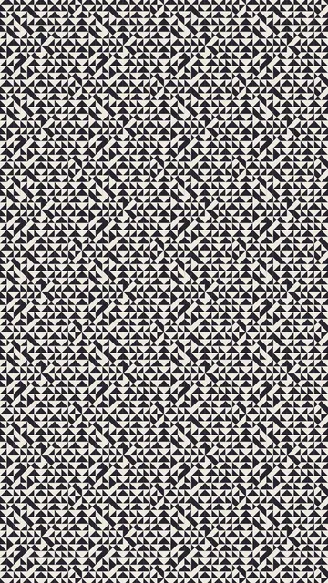
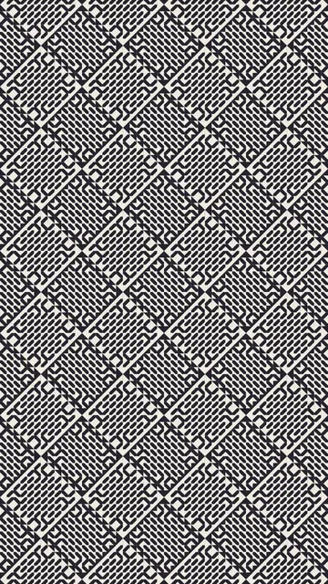
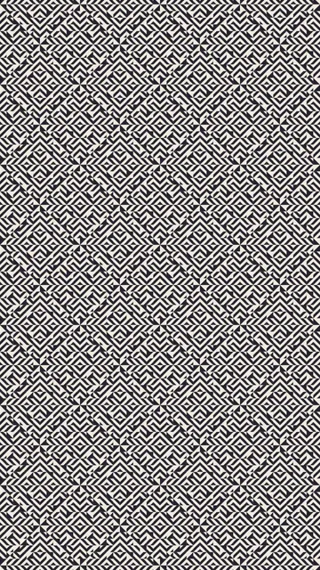
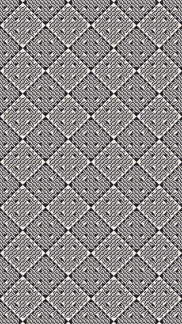
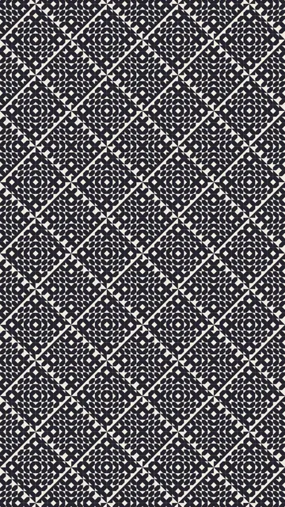
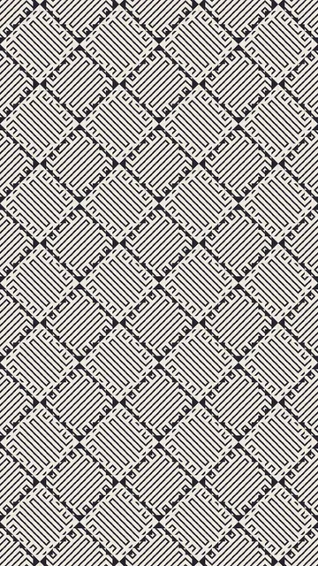

संग्रह B2D

अन्य भाषाएँ: Français · English · Español · ไทย · 简体中文 · Русский · Português
समूह 3 / 6 · 6 एनिमेशन
पट्टियों के वही परिवार, विकर्ण पर रखे हुए। क्लिक से पहले कुछ भी लोड नहीं होता, और एक समय में केवल एक एनिमेशन चलता है। हर एनिमेशन का दूसरी गति या दूसरे रंगों में पूर्वावलोकन किया जा सकता है।





